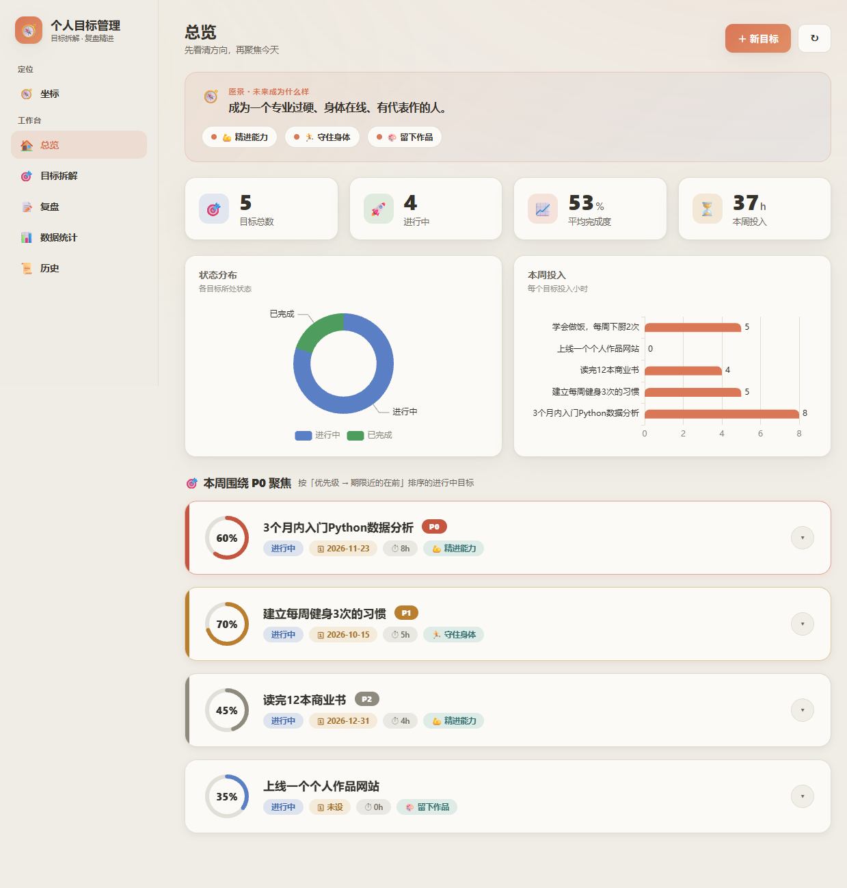
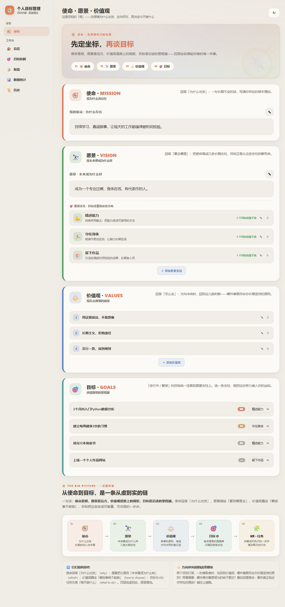
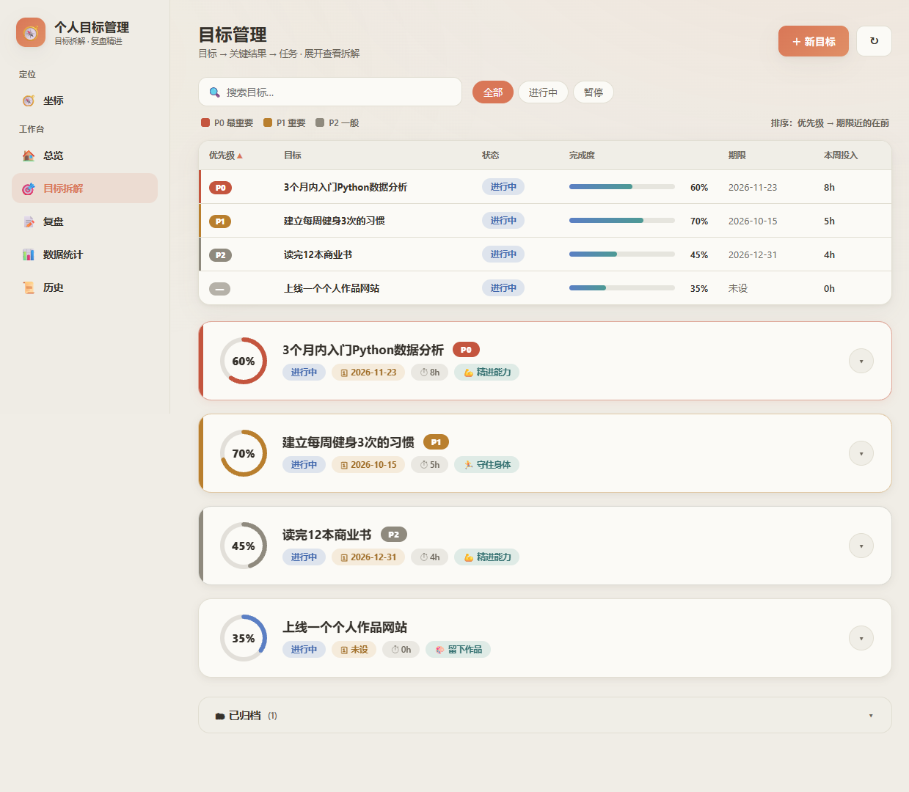
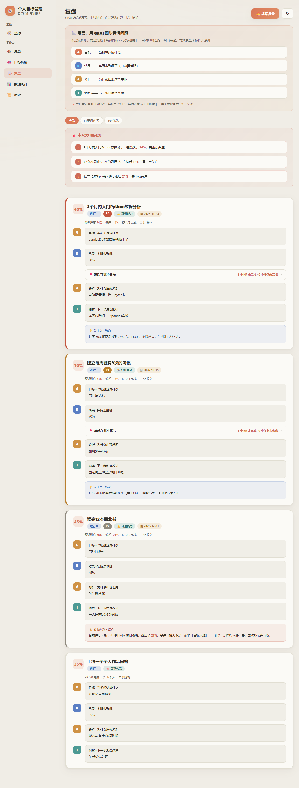
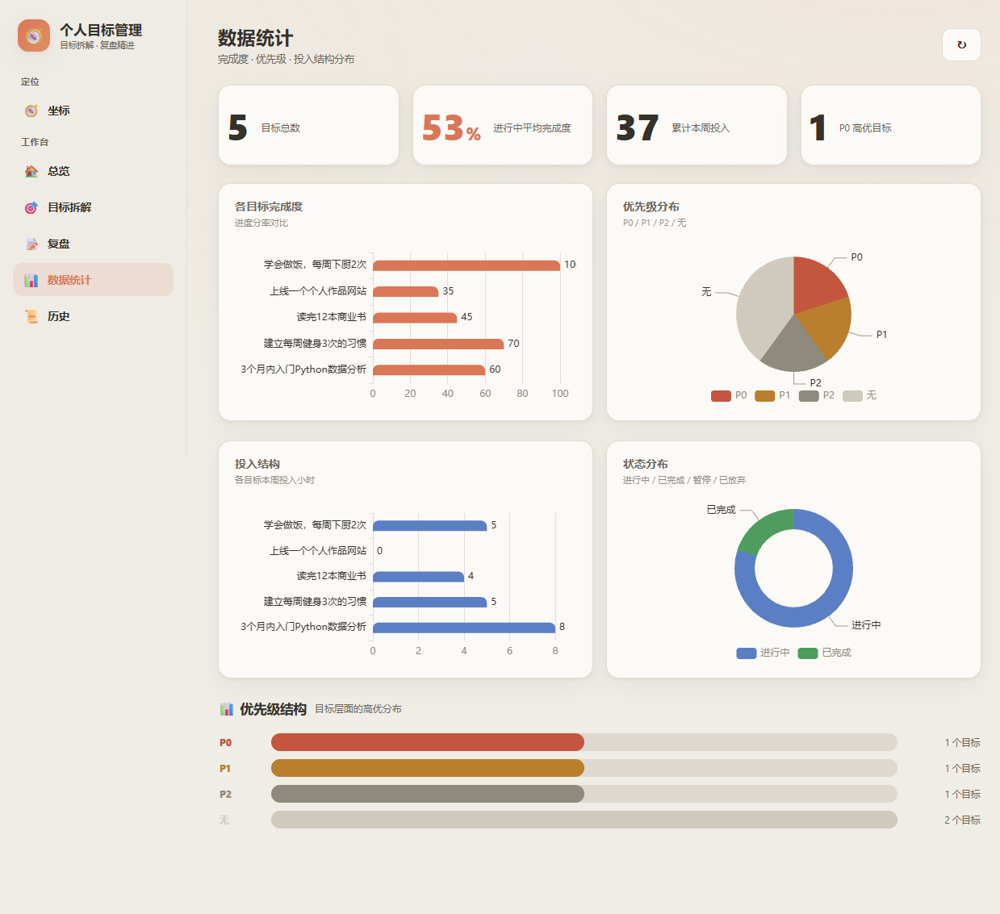
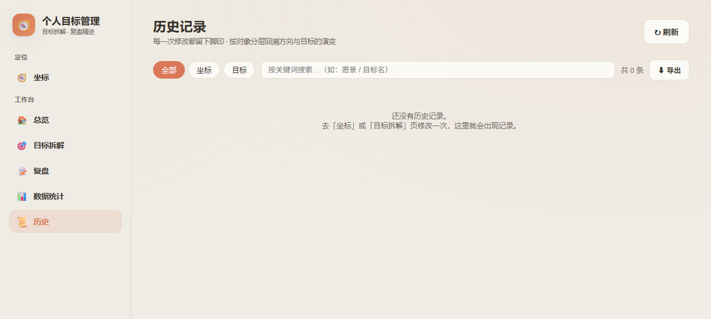

使命 → 愿景 → 价值观 → 目标 → 关键结果 → 任务，环环相扣。
帮你看清该往哪走、走得怎么样。
从使命、愿景、价值观出发，拆成目标→KR→任务，每个目标都挂在一根"人生支柱"上。
环形进度、优先级色带（P0/P1/P2）、到期排序、归档区，界面用 Cloee 暖米色系克制耐看。
自动评估"目标 vs 实际"，生成结论式洞察（进步/落后/加速/风险），每周几分钟完成复盘。
坐标与目标的所有修改都有差分记录，可回溯、可导出 CSV。
图表库本地化，断网也能用；数据就是两个 JSON 文件，备份即复制。
所有信息存你电脑，不上传任何服务器；代码开源，你可以自己审它访问了什么。
以下为匿名示例数据下的真实运行截图
overview

mission

goals

review

stats

history

人生罗盘 · 本地优先的 OKR 个人目标管理工作台
本页为静态预览版（仅展示界面，不能真实操作数据）· 项目地址：github.com/ChanceEix/goal-coach-local